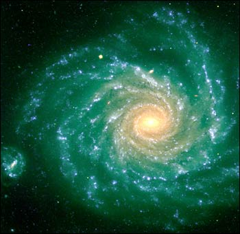

CHAPTER 3 THE EXPANDING UNIVERSE
第三章 膨胀的宇宙
If one looks at the sky on a clear, moonless night, the brightest objects one sees are likely to be the planets Venus, Mars, Jupiter, and Saturn. There will also be a very large number of stars, which are just like our own sun but much farther from us. Some of these fixed stars do, in fact, appear to change very slightly their positions relative to each other as earth orbits around the sun: they are not really fixed at all! This is because they are comparatively near to us. As the earth goes round the sun, we see them from different positions against the background of more distant stars. This is fortunate, because it enables us to measure directly the distance of these stars from us: the nearer they are, the more they appear to move. The nearest star, called Proxima Centauri, is found to be about four light-years away (the light from it takes about four years to reach earth), or about twenty-three million million miles. Most of the other stars that are visible to the naked eye lie within a few hundred light-years of us. Our sun, for comparison, is a mere light-minutes away! The visible stars appear spread all over the night sky, but are particularly concentrated in one band, which we call the Milky Way. As long ago as 1750, some astronomers were suggesting that the appearance of the Milky Way could be explained if most of the visible stars lie in a single disklike configuration, one example of what we now call a spiral galaxy. Only a few decades later, the astronomer Sir William Herschel confirmed this idea by painstakingly cataloging the positions and distances of vast numbers of stars. Even so, the idea gained complete acceptance only early this century.
如果在一个清澈的、无月亮的夜晚仰望星空，能看到的最亮的星体最可能是金星、火星、木星和土星这几颗行星，还有巨大数目的类似太阳、但离开我们远得多的恒星。事实上，当地球绕着太阳公转时，某些固定的恒星相互之间的位置确实起了非常微小的变化——它们不是真正固定不动的！这是因为它们距离我们相对靠近一些。当地球绕着太阳公转时，相对于更远处的恒星的背景，我们从不同的位置观测它们。这是幸运的，因为它使我们能直接测量这些恒星离开我们的距离，它们离我们越近，就显得移动得越多。最近的恒星叫做普罗希马半人马座，它离我们大约4光年那么远（从它发出的光大约花4年才能到达地球），也就是大约23万亿英里的距离。大部分其他可用肉眼看到的恒星离开我们的距离均在几百光年之内。与之相比，我们太阳仅仅在8光分那么远！可见的恒星散布在整个夜空，但是特别集中在一条称为银河的带上。远在公元1750年，就有些天文学家建议，如果大部分可见的恒星处在一个单独的碟状的结构中，则银河的外观可以得到解释。碟状结构的一个例子，便是今天我们叫做螺旋星系的东西。只有在几十年之后，天文学家威廉·赫歇尔爵士才非常精心地对大量的恒星的位置和距离进行编目分类，从而证实了自己的观念。即便如此，这个思想在本世纪初才完全被人们接受。
Our modern picture of the universe dates back to only 1924, when the American astronomer Edwin Hubble demonstrated that ours was not the only galaxy. There were in fact many others, with vast tracts of empty space between them. In order to prove this, he needed to determine the distances to these other galaxies, which are so far away that, unlike nearby stars, they really do appear fixed. Hubble was forced, therefore, to use indirect methods to measure the distances. Now, the apparent brightness of a star depends on two factors: how much light it radiates (its luminosity), and how far it is from us. For nearby stars, we can measure their apparent brightness and their distance, and so we can work out their luminosity. Conversely, if we knew the luminosity of stars in other galaxies, we could work out their distance by measuring their apparent brightness. Hubble noted that certain types of stars always have the same luminosity when they are near enough for us to measure; therefore, he argued, if we found such stars in another galaxy, we could assume that they had the same luminosity – and so calculate the distance to that galaxy. If we could do this for a number of stars in the same galaxy, and our calculations always gave the same distance, we could be fairly confident of our estimate.
1924年，我们现代的宇宙图象才被奠定。那是因为美国天文学家埃得温·哈勃证明了，我们的星系不是唯一的星系。事实上，还存在许多其他的星系，在它们之间是巨大的空虚的太空。为了证明这些|Qī-shu-ωang|，他必须确定这些星系的距离。这些星系是如此之遥远，不像邻近的恒星那样，它们确实显得是固定不动的。所以哈勃被迫用间接的手段去测量这些距离。众所周知，恒星的表观亮度决定于两个因素：多少光被辐射出来（它的绝对星等）以及它离我们多远。对于近处的恒星，我们可以测量其表观亮度和距离，这样我们可以算出它的绝对亮度。相反，如果我们知道其他星系中恒星的绝对亮度，我们可用测量它们的表观亮度的方法来算出它们的距离。哈勃注意到，当某些类型的恒星近到足够能被我们测量时，它们有相同的绝对光度；所以他提出，如果我们在其他星系找出这样的恒星，我们可以假定它们有同样的绝对光度——这样就可计算出那个星系的距离。如果我们能对同一星系中的许多恒星这样做，并且计算结果总是给出相同的距离，则我们对自己的估计就会有相当的信赖度。
In this way, Edwin Hubble worked out the distances to nine different galaxies. We now know that our galaxy is only one of some hundred thousand million that can be seen using modern telescopes, each galaxy itself containing some hundred thousand million stars. Figure 3:1 shows a picture of one spiral galaxy that is similar to what we think ours must look like to someone living in another galaxy. We live in a galaxy that is about one hundred thousand light-years across and is slowly rotating; the stars in its spiral arms orbit around its center about once every several hundred million years. Our sun is just an ordinary, average-sized, yellow star, near the inner edge of one of the spiral arms. We have certainly come a long way since Aristotle and Ptolemy, when thought that the earth was the center of the universe!
埃得温·哈勃用上述方法算出了九个不同星系的距离。现在我们知道，我们的星系只是用现代望远镜可以看到的几千亿个星系中的一个，每个星系本身都包含有几千亿颗恒星。图3.1所示的便是一个螺旋星系的图，从生活在其他星系中的人来看我们的星系，想必也是类似这个样子。我们生活在一个宽约为10万光年并慢慢旋转着的星系中；在它的螺旋臂上的恒星绕着它的中心公转一圈大约花几亿年。我们的太阳只不过是一个平常的、平均大小的、黄色的恒星，它靠近在一个螺旋臂的内边缘。我们离开亚里士多德和托勒密的观念肯定是相当遥远了，那时我们认为地球是宇宙的中心！
Stars are so far away that they appear to us to be just pinpoints of light. We cannot see their size or shape. So how can we tell different types of stars apart? For the vast majority of stars, there is only one characteristic feature that we can observe – the color of their light. Newton discovered that if light from the sun passes through a triangular-shaped piece of glass, called a prism, it breaks up into its component colors (its spectrum) as in a rainbow. By focusing a telescope on an individual star or galaxy, one can similarly observe the spectrum of the light from that star or galaxy. Different stars have different spectra, but the relative brightness of the different colors is always exactly what one would expect to find in the light emitted by an object that is glowing red hot. (In fact, the light emitted by any opaque object that is glowing red hot has a characteristic spectrum that depends only on its temperature – a thermal spectrum. This means that we can tell a star’s temperature from the spectrum of its light.) Moreover, we find that certain very specific colors are missing from stars’ spectra, and these missing colors may vary from star to star. Since we know that each chemical element absorbs a characteristic set of very specific colors, by matching these to those that are missing from a star’s spectrum, we can determine exactly which elements are present in the star’s atmosphere.
恒星离开我们是如此之远，以致使我们只能看到极小的光点，而看不到它们的大小和形状。这样怎么能区分不同的恒星种类呢？对于绝大多数的恒星，只有一个特征可供观测——光的颜色。牛顿发现，如果太阳光通过一个称为棱镜的三角形状的玻璃块，就会被分解成像彩虹一样的分颜色（它的光谱）。将一个望远镜聚焦在一个单独的恒星或星系上，人们就可类似地观察到从这恒星或星系来的光谱线。不同的恒星具有不同的光谱，但是不同颜色的相对亮度总是刚好和一个红热的物体发出的光谱完全一致。（实际上，从一个不透明的灼热的物体发出的光，有一个只依赖于它的温度的特征光谱——热谱。这意味着可以从恒星的光谱得知它的温度。）并且，我们发现，某些非常特定的颜色在恒星光谱里找不到，这些失去的谱线可以因不同的恒星而异。既然我们知道，每一化学元素都有非常独特的吸收光谱线族，将它们和恒星光谱中失去的谱线相比较，我们就可以准确地确定恒星大气中存在什么元素。
In the 1920s, when astronomers began to look at the spectra of stars in other galaxies, they found something most peculiar: there were the same characteristic sets of missing colors as for stars in our own galaxy, but they were all shifted by the same relative amount toward the red end of the spectrum. To understand the implications of this, we must first understand the Doppler effect. As we have seen, visible light consists of fluctuations, or waves, in the electromagnetic field. The wavelength (or distance from one wave crest to the next) of light is extremely small, ranging from four to seven ten-millionths of a meter.
在20年代天文学家开始观察其他星系中的恒星光谱时，他们发现了最奇异的现象：它们和我们的银河系一样具有吸收的特征线族，只是所有这些线族都向光谱的红端移动了同样相对的量。为了理解这个含意，我们必须先理解多普勒效应。我们已经知道，可见光即是电磁场的起伏或波动。光的波长（或者相邻波峰之间的距离）极其微小，约为0.0000004至0.0000008米。
The different wavelengths of light are what the human eye sees as different colors, with the longest wavelengths appearing at the red end of the spectrum and the shortest wavelengths at the blue end. Now imagine a source of light at a constant distance from us, such as a star, emitting waves of light at a constant wavelength. Obviously the wavelength of the waves we receive will be the same as the wavelength at which they are emitted (the gravitational field of the galaxy will not be large enough to have a significant effect). Suppose now that the source starts moving toward us. When the source emits the next wave crest it will be nearer to us, so the distance between wave crests will be smaller than when the star was stationary. This means that the wavelength of the waves we receive is shorter than when the star was stationary. Correspondingly, if the source is moving away from us, the wavelength of the waves we receive will be longer. In the case of light, therefore, means that stars moving away from us will have their spectra shifted toward the red end of the spectrum (red-shifted) and those moving toward us will have their spectra blue-shifted. This relationship between wavelength and speed, which is called the Doppler effect, is an everyday experience. Listen to a car passing on the road: as the car is approaching, its engine sounds at a higher pitch (corresponding to a shorter wavelength and higher frequency of sound waves), and when it passes and goes away, it sounds at a lower pitch. The behavior of light or radio waves is similar. Indeed, the police make use of the Doppler effect to measure the speed of cars by measuring the wavelength of pulses of radio waves reflected off them.
光的不同波长正是人眼看到的不同颜色，最长的波长出现在光谱的红端，而最短的波长在光谱的蓝端。想像在离开我们一个固定的距离处有一光源——例如恒星——以固定的波长发出光波。显然我们接收到的波长和发射时的波长一样（星系的引力场没有强到足以对它产生明显的效应）。现在假定这恒星光源开始向我们运动。当光源发出第二个波峰时，它离开我们更近一些，这样两个波峰之间的距离比恒星静止时更小。这意味着，我们接收到的波的波长比恒星静止时更短。相应地，如果光源离开我们运动，我们接收的波的波长将更长。这意味着，当恒星离开我们而去时，它们的光谱向红端移动（红移）；而当恒星趋近我们而来时，光谱则蓝移。这个称之为多普勒效应的频率和速度的关系是我们日常所熟悉的，例如我们听路上来往小汽车的声音：当它开过来时，它的发动机的音调变高（对应于声波的高频率）；当它通过我们身边而离开时，它的音调变低。光波或无线电波的行为与之类似。警察就是利用多普勒效应的原理，以无线电波脉冲从车上反射回来的频率来测量车速。
ln the years following his proof of the existence of other galaxies, Rubble spent his time cataloging their distances and observing their spectra. At that time most people expected the galaxies to be moving around quite randomly, and so expected to find as many blue-shifted spectra as red-shifted ones. It was quite a surprise, therefore, to find that most galaxies appeared red-shifted: nearly all were moving away from us! More surprising still was the finding that Hubble published in 1929: even the size of a galaxy’s red shift is not random, but is directly proportional to the galaxy’s distance from us. Or, in other words, the farther a galaxy is, the faster it is moving away! And that meant that the universe could not be static, as everyone previously had thought, is in fact expanding; the distance between the different galaxies is changing all the time.
在哈勃证明了其他星系存在之后的几年里，他花时间为它们的距离以及观察到的光谱分类。那时候大部份人相信，这些星系的运动相当紊乱，所以预料会发现和红移光谱一样多的蓝移光谱。但是，十分令人惊异的是，他发现大部份星系是红移的——几乎所有都远离我们而去！更惊异的是1929年哈勃发表的结果：甚至星系红移的大小也不是杂乱无章的，而是和星系离开我们的距离成正比。换句话讲，星系越远，则它离开我们运动得越快！这表明宇宙不可能像原先人们所想像的那样处于静态，而实际上是在膨胀；不同星系之间的距离一直在增加着。
The discovery that the universe is expanding was one of the great intellectual revolutions of the twentieth century. With hindsight, it is easy wonder why no one had thought of it before. Newton, and others should have realized that a static universe would soon start to contract under the influence of gravity. But suppose instead that the universe is expanding. If it was expanding fairly slowly, the force of gravity would cause it eventually to stop expanding and then to start contracting. However, if it was expanding at more than a certain critical rate, gravity would never be strong enough to stop it, and the universe would continue to expand forever. This is a bit like what happens when one fires a rocket upward from the surface of the earth. If it has a fairly low speed, gravity will eventually stop the rocket and it will start falling back. On the other hand, if the rocket has more than a certain critical speed (about seven miles per second), gravity will not be strong enough to pull it back, so it will keep going away from the earth forever. This behavior of the universe could have been predicted from Newton’s theory of gravity at any time in the nineteenth, the eighteenth, or even the late seventeenth century. Yet so strong was the belief in a static universe that it persisted into the early twentieth century. Even Einstein, when he formulated the general theory of relativity in 1915, was so sure that the universe had to be static that he modified his theory to make this possible, introducing a so-called cosmological constant into his equations. Einstein introduced a new “antigravity” force, which, unlike other forces, did not come from any particular source but was built into the very fabric of space-time. He claimed that space-time had an inbuilt tendency to expand, and this could be made to balance exactly the attraction of all the matter in the universe, so that a static universe would result. Only one man, it seems, was willing to take general relativity at face value, and while Einstein and other physicists were looking for ways of avoiding general relativity’s prediction of a nonstatic universe, the Russian physicist and mathematician Alexander Friedmann instead set about explaining it.
宇宙膨胀的发现是20世纪最伟大的智慧革命之一。事后想起来，何以过去从来没有人想到这一点？！牛顿或其他人应该会意识到，静态的宇宙在引力的影响下会很快开始收缩。然而现在假定宇宙正在膨胀，如果它膨胀得相当慢，引力会使之最终停止膨胀，然后开始收缩。但是，如果它膨胀得比某一临界速率更快，引力则永远不足够强而使其膨胀停止，宇宙就永远继续膨胀下去。这有点像一个人在地球表面引燃火箭上天时发生的情形，如果火箭的速度相当慢，引力将最终使之停止并折回地面；另一方面，如果火箭具有比某一临界值（大约每秒7英里）更高的速度，引力的强度不足以将其拉回，所以它将继续永远飞离地球。19世纪、18世纪甚至17世纪晚期的任何时候，人们都可以从牛顿的引力论预言出宇宙的这个行为。然而，静态宇宙的信念是如此之强，以至于一直维持到了20世纪的早期。甚至爱因斯坦于1915年发表其广义相对论时，还是如此之肯定宇宙必须是静态的，以使得他在其方程中不得不引进一个所谓的宇宙常数来修正自己的理论，使静态的宇宙成为可能。爱因斯坦引入一个新的“反引力”，这力不像其他的力那样，不发源于任何特别的源，而是空间——时间结构所固有的。他宣称，空间——时间有一内在的膨胀的趋向，这可以用来刚好去平衡宇宙间所有物质的相互吸引，结果使宇宙成为静态的。当爱因斯坦和其他物理学家正在想方设法避免广义相对论的非静态宇宙的预言时，看来只有一个人，即俄国物理学家和数学家亚历山大·弗利德曼愿意只用广义相对论着手解释它。
Friedmann made two very simple assumptions about the universe: that the universe looks identical in whichever direction we look, and that this would also be true if we were observing the universe from anywhere else. From these two ideas alone, Friedmann showed that we should not expect the universe to be static. In fact, in 1922, several years before Edwin Hubble’s discovery, Friedmann predicted exactly what Hubble found!
弗利德曼对于宇宙作了两个非常简单的假定：我们不论往哪个方向看，也不论在任何地方进行观察，宇宙看起来都是一样的。弗利德曼指出，仅仅从这两个观念出发，我们就应该预料宇宙不是静态的。事实上，弗利德曼在1922年所做的预言，正是几年之后埃得温·哈勃所观察到的结果。
The assumption that the universe looks the same in every direction is clearly not true in reality. For example, as we have seen, the other stars in our galaxy form a distinct band of light across the night sky, called the Milky Way. But if we look at distant galaxies, there seems to be more or less the same number of them. So the universe does seem to be roughly the same in every direction, provided one views it on a large scale compared to the distance between galaxies, and ignores the differences on small scales. For a long time, this was sufficient justification for Friedmann’s assumption – as a rough approximation to the real universe. But more recently a lucky accident uncovered the fact that Friedmann’s assumption is in fact a remarkably accurate description of our universe.
很清楚，关于在任何方向上宇宙都显得是一样的假设实际上是不对的。例如，正如我们所看到的，我们星系中的其他恒星形成了横贯夜空的叫做银河系的光带。但是如果看得更远，星系数目就或多或少显得是同样的。所以假定我们在比星系间距离更大的尺度下来观察，而不管在小尺度下的差异，则宇宙确实在所有的方向看起来是大致一样的。在很长的时间里，这为弗利德曼的假设——作为实际宇宙的粗糙近似提供了充分的证实。但是，近世出现的一桩幸运的事件所揭示的事实说明了，弗利德曼假设实际上异常准确地描述了我们的宇宙。
In 1965 two American physicists at the Bell Telephone Laboratories in New Jersey, Arno Penzias and Robert Wilson, were testing a very sensitive microwave detector. (Microwaves are just like light waves, but with a wavelength of around a centimeter.) Penzias and Wilson were worried when they found that their detector was picking up more noise than it ought to. The noise did not appear to be coming from any particular direction. First they discovered bird droppings in their detector and checked for other possible malfunctions, but soon ruled these out. They knew that any noise from within the atmosphere would be stronger when the detector was not pointing straight up than when it was, because light rays travel through much more atmosphere when received from near the horizon than when received from directly overhead. The extra noise was the same whichever direction the detector was pointed, so it must come from outside the atmosphere. It was also the same day and night and throughout the year, even though the earth was rotating on its axis and orbiting around the sun. This showed that the radiation must come from beyond the Solar System, and even from beyond the galaxy, as otherwise it would vary as the movement of earth pointed the detector in different directions.
1965年，美国新泽西州贝尔电话实验室的阿诺·彭齐亚斯和罗伯特·威尔逊正在检测一个非常灵敏的微波探测器时（微波正如光波，但是它的波长大约为1英寸），他们的检测器收到了比预想的还要大的噪声。彭齐亚斯和威尔逊为此而忧虑，这噪声不像是从任何特别方向来的。首先他们在探测器上发现了鸟粪并检查了其他可能的故障，但很快就排除了这些可能性。他们知道，当探测器倾斜地指向天空时，从大气层里来的噪声应该比原先垂直指向时更强，因为光线在沿着靠近地平线方向比在头顶方向要穿过更厚的大气。然而，不管探测器朝什么方向，这额外的噪声都是一样的，所以它必须是从大气层以外来的，并且在白天、夜晚、整年，也就是甚至地球绕着自己的轴自转或绕太阳公转时也是一样的。这表明，这辐射必须来自太阳系以外，甚至星系之外，否则当地球的运动使探测器指向不同方向时，噪声必须变化。
In fact, we know that the radiation must have traveled to us across most of the observable universe, and since it appears to be the same in different directions, the universe must also be the same in every direction, if only on a large scale. We now know that whichever direction we look, this noise never varies by more than a tiny fraction: so Penzias and Wilson had unwittingly stumbled across a remarkably accurate confirmation of Friedmann’s first assumption. However, because the universe is not exactly the same in every direction, but only on average on a large scale, the microwaves cannot be exactly the same in every direction either. There have to be slight variations between different directions. These were first detected in 1992 by the Cosmic Background Explorer satellite, or COBE, at a level of about one part in a hundred thousand. Small though these variations are, they are very important, as will be explained in Chapter 8.
事实上，我们知道这辐射必须穿过我们可观察到的宇宙的大部分，并且由于它在不同方向都一样，至少在大尺度下，这宇宙也必须是各向同性的。现在我们知道，不管我们朝什么方向看，这噪声的变化总是非常小。这样，彭齐亚斯和威尔逊无意中非常精确地证实了弗利德曼的第一个假设。然而，由于宇宙并非在每一个方向上，而是在大尺度的平均上相同，所以微波也不可能在每一个方向上完全相同。在不同的方向之间必须有一些小变化。1992年宇宙背景探险者，或称为COBE，首次把它们检测到，其幅度大约为10万分之1。尽管这些变化很小，正如我们将在第八章解释的，但它们非常重要。
At roughly the same time as Penzias and Wilson were investigating noise in their detector, two American physicists at nearby Princeton University, Bob Dicke and Jim Peebles, were also taking an interest in microwaves. They were working on a suggestion, made by George Gamow (once a student of Alexander Friedmann), that the early universe should have been very hot and dense, glowing white hot. Dicke and Peebles argued that we should still be able to see the glow of the early universe, because light from very distant parts of it would only just be reaching us now. However, the expansion of the universe meant that this light should be so greatly red-shifted that it would appear to us now as microwave radiation. Dicke and Peebles were preparing to look for this radiation when Penzias and Wilson heard about their work and realized that they had already found it. For this, Penzias and Wilson were awarded the Nobel Prize in 1978 (which seems a bit hard on Dicke and Peebles, not to mention Gamow!).
大约同时，在附近的普林斯顿的两位美国物理学家，罗伯特·狄克和詹姆士·皮帕尔斯也对微波感兴趣。他们正在研究乔治·伽莫夫（曾为亚历山大·弗利德曼的学生）的一个见解：早期的宇宙必须是非常密集的、白热的。狄克和皮帕尔斯认为，我们仍然能看到早期宇宙的白热，这是因为光是从它的非常远的部分来，刚好现在才到达我们这儿。然而，宇宙的膨胀使得这光被如此厉害地红移，以至于现在只能作为微波辐射被我们所看到。正当狄克和皮帕尔斯准备寻找这辐射时，彭齐亚斯和威尔逊听到了他们所进行的工作，并意识到，自己已经找到了它。为此，彭齐亚斯和威尔逊被授予1978年的诺贝尔奖（狄克和皮帕尔斯看来有点难过，更别提伽莫夫了！）
Now at first sight, all this evidence that the universe looks the same whichever direction we look in might seem to suggest there is something special about our place in the universe. In particular, it might seem that if we observe all other galaxies to be moving away from us, then we must be at the center of the universe. There is, however, an alternate explanation: the universe might look the same in every direction as seen from any other galaxy too. This, as we have seen, was Friedmann’s second assumption. We have no scientific evidence for, or against, this assumption. We believe it only on grounds of modesty: it would be most remarkable if the universe looked the same in every direction around us, but not around other points in the universe! In Friedmann’s model, all the galaxies are moving directly away from each other. The situation is rather like a balloon with a number of spots painted on it being steadily blown up. As the balloon expands, the distance between any two spots increases, but there is no spot that can be said to be the center of the expansion. Moreover, the farther apart the spots are, the faster they will be moving apart. Similarly, in Friedmann’s model the speed at which any two galaxies are moving apart is proportional to the distance between them. So it predicted that the red shift of a galaxy should be directly proportional to its distance from us, exactly as Hubble found. Despite the success of his model and his prediction of Hubble’s observations, Friedmann’s work remained largely unknown in the West until similar models were discovered in 1935 by the American physicist Howard Robertson and the British mathematician Arthur Walker, in response to Hubble’s discovery of the uniform expansion of the universe.
现在初看起来，关于宇宙在任何方向看起来都一样的所有证据似乎暗示，我们在宇宙的位置有点特殊。特别是，如果我们看到所有其他的星系都远离我们而去，那似乎我们必须在宇宙的中心。然而，还存在另外的解释：从任何其他星系上看宇宙，在任何方向上也都一样。我们知道，这正是弗利德曼的第二个假设。我们没有任何科学的证据去相信或反驳这个假设。我们之所以相信它只是基于谦虚：因为如果宇宙只是在我们这儿看起来各向同性，而在宇宙的其他地方并非如此，则是非常奇异的！在弗利德曼模型中，所有的星系都直接相互离开。这种情形很像一个画上好多斑点的气球被逐渐吹胀。当气球膨胀时，任何两个斑点之间的距离加大，但是没有一个斑点可认为是膨胀的中心。并且斑点相离得越远，则它们互相离开得越快。类似地，在弗利德曼的模型中，任何两个星系互相离开的速度和它们之间的距离成正比。所以它预言，星系的红移应与离开我们的距离成正比，这正是哈勃所发现的。尽管他的模型的成功以及预言了哈勃的观测，但是直到1935年，为了响应哈勃的宇宙的均匀膨胀的发现，美国物理学家哈瓦·罗伯逊和英国数学家阿瑟·瓦尔克提出了类似的模型后，弗利德曼的工作在西方才被普遍知道。
Although Friedmann found only one, there are in fact three different kinds of models that obey Friedmann’s two fundamental assumptions. In the first kind (which Friedmann found) the universe is expanding sufficiently slowly that the gravitational attraction between the different galaxies causes the expansion to slow down and eventually to stop. The galaxies then start to move toward each other and the universe contracts.
虽然弗利德曼只找到一个模型，其实满足他的两个基本假设的共有三种模型。在第一种模型（即弗利德曼找到的）中，宇宙膨胀得足够慢，以至于在不同星系之间的引力使膨胀变慢下来，并最终使之停止。然后星系开始相互靠近，宇宙开始收缩。
Figure 3:2 shows how the distance between two neighboring galaxies changes as time increases. It starts at zero, increases to a maximum, and then decreases to zero again. In the second kind of solution, the universe is expanding so rapidly that the gravitational attraction can never stop it, though it does slow it down a bit.
图3.2表示随时间增加两个邻近的星系的距离的变化。刚开始时距离为零，接着它增长到最大值，然后又减小到零；在第二类解中，宇宙膨胀得如此之快，以至于引力虽然能使之缓慢一些，却永远不能使之停止。


Figure 3:3 Shows the Separation between neighboring galaxies in this model. It starts at zero and eventually the galaxies are moving apart at a steady speed. Finally, there is a third kind of solution, in which the universe is expanding only just fast enough to avoid recollapse. In this case the separation, shown in Figure 3:4, also starts at zero and increases forever. However, the speed at which the galaxies are moving apart gets smaller and smaller, although it never quite reaches zero.
图3.3表示此模型中的邻近星系的距离随时间的变化。刚开始时距离为零，最后星系以稳恒的速度相互离开；最后，还有第三类解，宇宙的膨胀快到足以刚好避免坍缩。正如图3.4所示，星系的距离从零开始，然后永远增大。然而，虽然星系分开的速度永远不会变为零，这速度却越变越小。

A remarkable feature of the first kind of Friedmann model is that in it the universe is not infinite in space, but neither does space have any boundary. Gravity is so strong that space is bent round onto itself, making it rather like the surface of the earth. If one keeps traveling in a certain direction on the surface of the earth, one never comes up against an impassable barrier or falls over the edge, but eventually comes back to where one started.
第一类弗利德曼模型的奇异特点是，宇宙在空间上不是无限的，并且是没有边界的。引力是如此之强，以至于空间被折弯而又绕回到自身，使之相当像地球的表面。如果一个人在地球的表面上沿着一定的方向不停地旅行，他将永远不会遇到一个不可超越的障碍或从边缘掉下去，而是最终走到他出发的那一点。
In the first kind of Friedmann model, space is just like this, but with three dimensions instead of two for the earth’s surface. The fourth dimension, time, is also finite in extent, but it is like a line with two ends or boundaries, a beginning and an end. We shall see later that when one combines general relativity with the uncertainty principle of quantum mechanics, it is possible for both space and time to be finite without any edges or boundaries.
第一类弗利德曼模型中的空间正与此非常相像，只不过地球表面是二维的，而它是三维的罢了。第四维时间的范围也是有限的，然而它像一根有两个端点或边界即开端和终端的线。以后我们会看到，当人们将广义相对论和量子力学的测不准原理结合在一起时，就可能使空间和时间都成为有限的、但却没有任何边缘或边界。
The idea that one could go right round the universe and end up where one started makes good science fiction, but it doesn’t have much practical significance, because it can be shown that the universe would recollapse to zero size before one could get round. You would need to travel faster than light in order to end up where you started before the universe came to an end – and that is not allowed!
一个人绕宇宙一周最终可回到出发点的思想是科学幻想的好题材，但实际上它并没有多大意义。因为可以指出，一个人还没来得及绕回一圈，宇宙已经坍缩到了零尺度。你必须旅行得比光波还快，才能在宇宙终结之前绕回到你的出发点——而这是不允许的！
In the first kind of Friedmann model, which expands and recollapses, space is bent in on itself, like the surface of the earth. It is therefore finite in extent. In the second kind of model, which expands forever, space is bent the other way, like the surface of a saddle. So in this case space is infinite. Finally, in the third kind of Friedmann model, with just the critical rate of expansion, space is flat (and therefore is also infinite).
在第一类弗利德曼模型中，宇宙膨胀后又坍缩，空间如同地球表面那样，弯曲后又折回到自己。在第二类永远膨胀的模型中，空间以另外的方式弯曲，如同一个马鞍面。所以，在这种情形下空间是无限的。最后，在第三类刚好以临界速率膨胀的弗利德曼模型中，空间是平坦的（所以也是无限的）。
But which Friedmann model describes our universe? Will the universe eventually stop expanding and start contracting, or will it expand forever? To answer this question we need to know the present rate of expansion of the universe and its present average density. If the density is less than a certain critical value, determined by the rate of expansion, the gravitational attraction will be too weak to halt the expansion. If the density is greater than the critical value, gravity will stop the expansion at some time in the future and cause the universe to recollapse.
但是究竟可用何种弗利德曼模型来描述我们的宇宙呢？宇宙最终会停止膨胀并开始收缩或将永远膨胀吗？要回答这个问题，我们必须知道现在的宇宙膨胀速度和它现在的平均密度。如果密度比一个由膨胀率决定的某临界值还小，则引力太弱不足于将膨胀停住；如果密度比这临界值大，则引力会在未来的某一时刻将膨胀停止并使宇宙坍缩。
We can determine the present rate of expansion by measuring the velocities at which other galaxies are moving away from us, using the Doppler effect. This can be done very accurately. However, the distances to the galaxies are not very well known because we can only measure them indirectly. So all we know is that the universe is expanding by between 5 percent and 10 percent every thousand million years. However, our uncertainty about the present average density of the universe is even greater. If we add up the masses of all the stars that we can see in our galaxy and other galaxies, the total is less than one hundredth of the amount required to halt the expansion of the universe, even for the lowest estimate of the rate of expansion. Our galaxy and other galaxies, however, must contain a large amount of “dark matter” that we cannot see directly, but which we know must be there because of the influence of its gravitational attraction on the orbits of stars in the galaxies. Moreover, most galaxies are found in clusters, and we can similarly infer the presence of yet more dark matter in between the galaxies in these clusters by its effect on the motion of the galaxies. When we add up all this dark matter, we still get only about one tenth of the amount required to halt the expansion. However, we cannot exclude the possibility that there might be some other form of matter, distributed almost uniformly throughout the universe, that we have not yet detected and that might still raise the average density of the universe up to the critical value needed to halt the expansion. The present evidence therefore suggests that the universe will probably expand forever, but all we can really be sure of is that even if the universe is going to recollapse, it won’t do so for at least another ten thousand million years, since it has already been expanding for at least that long. This should not unduly worry us: by that time, unless we have colonized beyond the Solar System, mankind will long since have died out, extinguished along with our sun!
利用多普勒效应，可由测量星系离开我们的速度来确定现在的宇宙膨胀速度。这可以非常精确地实现。然而，因为我们不是直接地测量星系的距离，所以它们的距离知道得不是非常清楚。所有我们知道的是，宇宙在每10亿年里膨胀5％至10％。然而，我们对现在宇宙的平均密度测量得更不准。我们如果将银河系和其他所有能看到的星系的恒星的质量加起来，甚至是按对膨胀率的最低的估值而言，其质量总量比用以阻止膨胀的临界值的1％还少。然而，在我们以及其他的星系里应该有大量的“暗物质”，那是我们不能直接看到的，但由于它的引力对星系中恒星轨道的影响，我们知道它必定存在。况且人们发现，大多数星系是成团的。类似地，由其对星系运动的效应，我们能推断出还有更多的暗物质存在于这些成团的星系之间。将所有这些暗物质加在一起，我们仍只能获得必须用以停止膨胀的密度的1/10。然而，我们不能排除这样的可能性，可能还有我们未能探测到的其他的物质形式几乎均匀地分布于整个宇宙，它仍可以使得宇宙的平均密度达到停止膨胀所必要的临界值。所以，现在的证据暗示，宇宙可能会无限地膨胀。但是，所有我们能真正了解的是，既然它已经膨胀了100亿年，即便如果宇宙还要坍缩，则至少要再过这么久才有可能。这不应使我们过度忧虑——到那时候。除非我们到太阳系以外开拓殖民地，人们早由于太阳的熄灭而死亡殆尽！
All of the Friedmann solutions have the feature that at some time in the past (between ten and twenty thousand million years ago) the distance between neighboring galaxies must have been zero. At that time, which we call the big bang, the density of the universe and the curvature of space-time would have been infinite. Because mathematics cannot really handle infinite numbers, this means that the general theory of relativity (on which Friedmann’s solutions are based) predicts that there is a point in the universe where the theory itself breaks down. Such a point is an example of what mathematicians call a singularity. In fact, all our theories of science are formulated on the assumption that space-time is smooth and nearly fiat, so they break down at the big bang singularity, where the curvature of space-time is infinite. This means that even if there were events before the big bang, one could not use them to determine what would happen afterward, because predictability would break down at the big bang.
所有的弗利德曼解都具有一个特点，即在过去的某一时刻（约100到200亿年之前）邻近星系之间的距离为零。在这被我们称之为大爆炸的那一时刻，宇宙的密度和空间——时间曲率都是无穷大。因为数学不能处理无穷大的数，这表明广义相对论（弗利德曼解以此为基础）预言，在宇宙中存在一点，在该处理论自身失效。这正是数学中称为奇点的一个例子。事实上，我们所有的科学理论都是基于空间——时间是光滑的和几乎平坦的基础上被表述的，所以它们在空间——时间曲率为无穷大的大爆炸奇点处失效。这表明，即使在大爆炸前存在事件，人们也不可能用之去确定之后所要发生的事件，因为可预见性在大爆炸处失效了。
Correspondingly, if, as is the case, we know only what has happened since the big bang, we could not determine what happened beforehand. As far as we are concerned, events before the big bang can have no consequences, so they should not form part of a scientific model of the universe. We should therefore cut them out of the model and say that time had a beginning at the big bang.
正是这样，与之相应的，如果我们只知道在大爆炸后发生的事件，我们也不能确定在这之前发生的事件。就我们而言，发生于大爆炸之前的事件不能有后果，所以并不构成我们宇宙的科学模型的一部分。因此，我们应将它们从我们模型中割除掉，并宣称时间是从大爆炸开始的。
Many people do not like the idea that time has a beginning, probably because it smacks of divine intervention. (The Catholic Church, on the other hand, seized on the big bang model and in 1951officially pronounced it to be in accordance with the Bible.) There were therefore a number of attempts to avoid the conclusion that there had been a big bang. The proposal that gained widest support was called the steady state theory. It was suggested in 1948 by two refugees from Nazi-occupied Austria, Hermann Bondi and Thomas Gold, together with a Briton, Fred Hoyle, who had worked with them on the development of radar during the war. The idea was that as the galaxies moved away from each other, new galaxies were continually forming in the gaps in between, from new matter that was being continually created. The universe would therefore look roughly the same at all times as well as at all points of space. The steady state theory required a modification of general relativity to allow for the continual creation of matter, but the rate that was involved was so low (about one particle per cubic kilometer per year) that it was not in conflict with experiment. The theory was a good scientific theory, in the sense described in Chapter 1: it was simple and it made definite predictions that could be tested by observation. One of these predictions was that the number of galaxies or similar objects in any given volume of space should be the same wherever and whenever we look in the universe. In the late 1950s and early 1960s a survey of sources of radio waves from outer space was carried out at Cambridge by a group of astronomers led by Martin Ryle (who had also worked with Bondi, Gold, and Hoyle on radar during the war). The Cambridge group showed that most of these radio sources must lie outside our galaxy (indeed many of them could be identified with other galaxies) and also that there were many more weak sources than strong ones. They interpreted the weak sources as being the more distant ones, and the stronger ones as being nearer. Then there appeared to be less common sources per unit volume of space for the nearby sources than for the distant ones. This could mean that we are at the center of a great region in the universe in which the sources are fewer than elsewhere. Alternatively, it could mean that the sources were more numerous in the past, at the time that the radio waves left on their journey to us, than they are now. Either explanation contradicted the predictions of the steady state theory. Moreover, the discovery of the microwave radiation by Penzias and Wilson in 1965 also indicated that the universe must have been much denser in the past. The steady state theory therefore had to be abandoned.
很多人不喜欢时间有个开端的观念，可能是因为它略带有神的干涉的味道。（另一方面，天主教抓住了大爆炸模型，并在1951年正式宣布，它和《圣经》相一致。）所以，许多人企图避免大爆炸曾经存在过的这一结论。所谓的稳态理论得到过最广泛的支持。这是由两个纳粹占领的奥地利来的难民，赫曼·邦迪和托马斯·高尔德，以及一个战时和他们一道从事研制雷达的英国人，弗雷得·霍伊尔于1948年共同提出的。其想法是，当星系互相离开时，在它们中的间隙由正在连续产生的新物质不断地形成新的星系。因此，在空间的所有地方以及在所有的时间，宇宙看起来大致是相同的。稳态理论需要对广义相对论进行修正，使之允许物质的。连续生成，但是其产生率是如此之低（大约每立方公里每年才产生一个粒子），以至于不与实验相冲突。在第一章叙述的意义上，这是一个好的科学理论：它非常简单，并做出确定的预言让观察检验。其中一个预言是，我们在宇宙的任何时候任何地方看给定的空间体积内星系或类似物体的数目必须一样。本世纪50年代晚期和60年代早期，由马丁·赖尔（他战时也和邦迪·高尔德以及霍伊尔共事作雷达研究）领导的一个天文学家小组在剑桥对从外空间来的射电源进行了普查。这个小组指出，这些射电源的大部分是位于我们星系之外（它们之中的许多确实可被认证与其他星系相关），并且存在的弱源比强源多得多。他们将弱源解释为更遥远的源，强源为较近的源。结果发现，单位空间体积内普通的源在近处比远处稀少。这可能表明，我们处于宇宙的一个巨大区域的中心，在这儿的源比其他地方稀少。另外的一个解释是，宇宙在射电开始发出的过去的那一时刻具有比我们现有的更密集的源。任何一种解释都和稳态理论相矛盾。况且，1965年彭齐亚斯和威尔逊的微波背景辐射的发现又指出，宇宙在过去必须密集得多。因此稳态理论必须被抛弃。
Another attempt to avoid the conclusion that there must have been a big bang, and therefore a beginning of time, was made by two Russian scientists, Evgenii Lifshitz and Isaac Khalatnikov, in 1963. They suggested that the big bang might be a peculiarity of Friedmann’s models alone, which after all were only approximations to the real universe. Perhaps, of all the models that were roughly like the real universe, only Friedmann’s would contain a big bang singularity. In Friedmann’s models, the galaxies are all moving directly away from each other – so it is not surprising that at some time in the past they were all at the same place. In the real universe, however, the galaxies are not just moving directly away from each other – they also have small sideways velocities. So in reality they need never have been all at exactly the same place, only very close together. Perhaps then the current expanding universe resulted not from a big bang singularity, but from an earlier contracting phase; as the universe had collapsed the particles in it might not have all collided, but had flown past and then away from each other, producing the present expansion of the the universe that were roughly like Friedmann’s models but took account of the irregularities and random velocities of galaxies in the real universe. They showed that such models could start with a big bang, even though the galaxies were no longer always moving directly away from each other, but they claimed that this was still only possible in certain exceptional models in which the galaxies were all moving in just the right way. They argued that since there seemed to be infinitely more Friedmann-like models without a big bang singularity than there were with one, we should conclude that there had not in reality been a big bang. They later realized, however, that there was a much more general class of Friedmann-like models that did have singularities, and in which the galaxies did not have to be moving any special way. They therefore withdrew their claim in 1970.
1963年，两位苏联科学家欧格尼·利弗席兹和伊萨克·哈拉尼可夫做了另一个尝试，设法避免存在大爆炸并因此引起时间起点的问题。他们提出；大爆炸可能只是弗利德曼模型的特性，这个模型毕竟只是真实宇宙的近似。也许，所有大体类似实在宇宙的模型中，只有弗利德曼模型包含大爆炸奇点。在弗利德曼模型中，所有星系都是直接互相离开——所以一点不奇怪，在过去的某一时刻它们必须在同一处。然而，在实际的宇宙中，星系不仅仅是直接互相离开——它也有一点横向速度。所以，在现实中它们从来没必要在同一处，只不过非常靠近而已。也许，现在膨胀着的宇宙不是大爆炸奇点的结果，而是从早期的收缩相而来的；当宇宙坍缩时，其中的粒子可以不都碰撞，而是互相离得很近穿过然后又离开，产生了现在的宇宙膨胀。何以得知这实际的宇宙是否从大爆炸开始的呢？利弗席兹和哈拉尼可夫研究的模型大体和弗利德曼模型相像，但是考虑了实际宇宙中的星系的不规则性和杂乱速度。他们指出，即使星系不再总是直接互相离开，这样的模型也可从一个大爆炸开始。但是他们宣称，这只可能发生在一定的例外的模型中，星系在这儿以正确的方式运动。他们论证道；似乎没有大爆炸奇点的类弗利德曼模型比有此奇点的模型多无限多倍，所以我们的结论应该是，实际中没有过大爆炸。然而，他们后来意识到，存在更为广泛的具有奇性的类弗利德曼模型，星系在那儿并不需要以任何特别的方式运动。所以，1970年他们收回了自己的宣布。
The work of Lifshitz and Khalatnikov was valuable because it showed that the universe could have had a singularity, a big bang, if the general theory of relativity was correct. However, it did not resolve the crucial question: Does general relativity predict that our universe should have had a big bang, a beginning of time? The answer to this carne out of a completely different approach introduced by a British mathematician and physicist, Roger Penrose, in 1965. Using the way light cones behave in general relativity, together with the fact that gravity is always attractive, he showed that a star collapsing under its own gravity is trapped in a region whose surface eventually shrinks to zero size. And, since the surface of the region shrinks to zero, so too must its volume. All the matter in the star will be compressed into a region of zero volume, so the density of matter and the curvature of space-time become infinite. In other words, one has a singularity contained within a region of space-time known as a black hole.
利弗席兹和哈拉尼科夫的工作是有价值的。因为它显示了，如果广义相对论是正确的，宇宙可以有过奇点，一个大爆炸。然而，它没有解决关键的问题：广义相对论是否预言我们的宇宙必须有过大爆炸或时间的开端？对这个问题，英国数学家兼物理学家罗杰·彭罗斯在1965年以完全不同的手段给出了回答。利用广义相对论中光锥行为的方式以及引力总是吸引这一事实，他指出，坍缩的恒星在自己的引力作用下被陷入到一个区域之中，其表面最终缩小到零。并且由于这区域的表面缩小到零，它的体积也应如此。恒星中的所有物质将被压缩到一个零体积的区域里，所以物质的密度和空间——时间的曲率变成无限大。换言之，人们得到了一个奇点，它被包含在叫做黑洞的空间——时间的一个区域中。
At first sight, Penrose’s result applied only to stars; it didn’t have anything to say about the question of whether the entire universe had a big bang singularity in its past. However, at the time that Penrose produced his theorem, I was a research student desperately looking for a problem with which to complete my Ph.D. thesis. Two years before, I had been diagnosed as suffering from ALS, commonly known as Lou Gehrig’s disease, or motor neuron disease, and given to understand that I had only one or two more years to live. In these circumstances there had not seemed much point in working on my Ph.D.– I did not expect to survive that long. Yet two years had gone by and I was not that much worse. In fact, things were going rather well for me and I had gotten engaged to a very nice girl, Jane Wilde. But in order to get married, I needed a job, and in order to get a job, I needed a Ph.D.
初看起来，彭罗斯的结果只适用于恒星，它并没有涉及到任何关于整个宇宙的过去是否有个大爆炸奇点的问题。然而，正当彭罗斯在创造他的定理之时，我是一个正在尽力寻求一个问题可用之完成博士论文的研究生。两年之前我即被诊断得了ALS，通常又被称为卢伽雷病或运动神经细胞病，并且我被告知只有一两年可活了。在这种情况下，看来没有很多必要攻读我的博士学位了——我预料不能活那么久。然而两年过去了，我没有糟到那种程度。事实上，我的事情还进行得相当好，还和一个非常好的姑娘简·瓦尔德定婚了。但是为了结婚，我需要一个工作；为了得到工作，我需要一个博士学位。
In 1965 I read about Penrose’s theorem that any body undergoing gravitational collapse must eventually form a singularity. I soon realized that if one reversed the direction of time in Penrose’s theorem, so that the collapse became an expansion, the conditions of his theorem would still hold, provided the universe were roughly like a Friedmann model on large scales at the present time. Penrose’s theorem had shown that any collapsing star must end in a singularity; the time-reversed argument showed that any Friedmann-like expanding universe must have begun with a singularity. For technical reasons, Penrose’s theorem required that the universe be infinite in space. So I could in fact, use it to prove that there should be a singularity only if the universe was expanding fast enough to avoid collapsing again (since only those Friedmann models were infinite in space).
1965年，我读到彭罗斯关于任何物体受到引力坍缩必须最终形成一个奇点的定理。我很快意识到，如果人们将彭罗斯定理中的时间方向颠倒以使坍缩变成膨胀，假定现在宇宙在大尺度上大体类似弗利德曼模型，这定理的条件仍然成立。彭罗斯定理指出，任何坍缩必须终结于一个奇点；其时间颠倒的论断则是，任何类弗利德曼膨胀模型必须从一个奇点开始。为了技巧上的原因，彭罗斯定理需要以宇宙在空间上是无限的为条件。所以事实上，我能用它来证明，只有当宇宙膨胀得快到足够以避免重新坍缩时（因为只有那些弗利德曼模型才是空间无限的），必须存在一个奇点。
During the next few years I developed new mathematical techniques to remove this and other technical conditions from the theorems that proved that singularities must occur. The final result was a joint paper by Penrose and myself in 1970, which at last proved that there must have been a big bang singularity provided only that general relativity is correct and the universe contains as much matter as we observe. There was a lot of opposition to our work, partly from the Russians because of their Marxist belief in scientific determinism, and partly from people who felt that the whole idea of singularities was repugnant and spoiled the beauty of Einstein’s theory. However, one cannot really argue with a mathematical theorem. So in the end our work became generally accepted and nowadays nearly everyone assumes that the universe started with a big bang singularity. It is perhaps ironic that, having changed my mind, I am now trying to convince other physicists that there was in fact no singularity at the beginning of the universe – as we shall see later, it can disappear once quantum effects are taken into account.
以后的几年中，我发展了新的数学技巧，从证明奇性必须发生的定理中除去了这个和其他技术上的条件。最后的结果是1970年彭罗斯和我的合作论文。那篇论文最后证明了，假定广义相对论是正确的，宇宙包含着我们观测到的这么多物质，则过去必须有一大爆炸奇点。我们的工作遭到许许多多的反对，部分来自苏联人，由于他们对科学宿命论的信仰；另一部分来自某些人，他们不喜欢整个奇点的观念，并认为这糟蹋了爱因斯坦理论的完美。然而，人实在不能辩赢数学定理。所以最终我们的工作被广泛接受，现在几乎每个人都假定宇宙是从一个大爆炸奇点开始的。颇具讽刺意味的是，现在我改变了想法，试图去说服其他物理学家，事实上在宇宙的开端并没有奇点——正如我们将看到的，只要考虑了量子效应，奇性则会消失。
We have seen in this chapter how, in less than half a century, man’s view of the universe formed over millennia has been transformed. Hubble’s discovery that the universe was expanding, and the realization of the insignificance of our own planet in the vastness of the universe, were just the starting point. As experimental and theoretical evidence mounted, it became more and more clear that the universe must have had a beginning in time, until in 1970 this was finally proved by Penrose and myself, on the basis of Einstein’s general theory of relativity. That proof showed that general relativity is only an incomplete theory: it cannot tell us how the universe started off, because it predicts that all physical theories, including itself, break down at the beginning of the universe. However, general relativity claims to be only a partial theory, so what the singularity theorems really show is that there must have been a time in the very early universe when the universe was so small that one could no longer ignore the small-scale effects of the other great partial theory of the twentieth century, quantum mechanics. At the start of the 1970s, then, we were forced to turn our search for an understanding of the universe from our theory of the extraordinarily vast to our theory of the extraordinarily tiny. That theory, quantum mechanics, will be described next, before we turn to the efforts to combine the two partial theories into a single quantum theory of gravity.
从这一章我们看到，在不到半个世纪的时间里，人们几千年来形成的关于宇宙的观点被改变了。哈勃关于宇宙膨胀的发现，并意识到我们的行星在茫茫的宇宙中的微不足道，只不过是起点而已。随着实验和理论证据的积累，人们越来越清楚地认识到，宇宙在时间上必须有个开端。直到1970年，在爱因斯坦的广义相对论的基础上，这才被彭罗斯和我所证明。这个证明显示，广义相对论只是一个不完全的理论，它不能告诉我们宇宙是如何开始的。因为它预言，所有包括它自己在内的物理理论都在宇宙的开端失效。然而，广义相对论宣称自己只是一个部分理论，所以奇点定理真正所显示的是，在极早期宇宙中有过一个时刻，那时宇宙是如此之小，以至于人们不能再不管20世纪另一个伟大的部分理论——量子力学的小尺度效应。20世纪70年代初期，我们被迫从对极其巨大范围的理论研究转到对极其微小范围的理论研究。下面在我们进而努力将这两个部分理论结合成一个单独的量子引力论之前，首先描述量子力学这个理论。